Classification using parametric discriminative models in pmtk3
We extend the parametric discriminative regression models discussed here to the classification setting.
Contents
Logistic regression: plugin method
Consider fitting a binary logistic regression model to some SAT scores, where the response is whether the student passed or failed the class. First we compute the MLE and use a plugin approximation for prediction, as is standard practice (from logregSATdemo.m )
close all; clear all stat = loadData('sat'); y = stat(:,1); X = stat(:,4); model = logregFit(X, y); [yhat, prob] = logregPredict(model, X); %ok figure; plot(X, y, 'ko', 'linewidth', 2, 'MarkerSize', 7, 'markerfacecolor', 'k'); hold on plot(X, prob, 'ro', 'linewidth', 2,'MarkerSize', 10)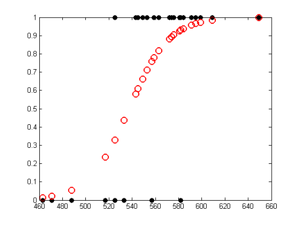
We see that the probability of passing the class smoothly increases as the SAT score goes up, as is to be expected.
Logistic regression: Bayesian method
Now let us fit the model using Bayesian inference with an noninformative prior, which we approximate by 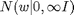, which corresponds to inference with an L2 regularizer of 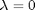. By default, the fitting procedure uses a Laplace approximation to the posterior, from which we can extract credible intervals on the parameters, etc.
To approximate the predictive density, we can plug in the posterior mean:

However, this gives essentially the same result as plugging in the MLE. To get a measure of confidence in this prediction, we can sample values of the parameters from their posterior (which we have approximated by a Gaussian), use each such sample to make a prediction, and then compute empirical quantiles of this distribution to get a 95% credible interval. This is done using logregPredictBayes.m and gives the results shown below (from logregSATdemoBayes.m )
model = logregFitBayes(X, y); [yhat, prob, pCI] = logregPredictBayes(model, X); figure; plot(X, y, 'ko', 'linewidth', 2, 'MarkerSize', 7, 'markerfacecolor', 'k'); hold on plot(X, prob, 'ro', 'linewidth', 2,'MarkerSize', 10) for i=1:size(X,1) line([X(i,1) X(i,1)], [pCI(i,1) pCI(i,2)]); end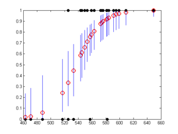
Visualizing the decision boundaries
When comparing classification methods, it is useful to apply them to 2d datasets and to plot the regions of space that get mapped to each class; these are called decision regions, and the boundaries between them are called decision boundaries. We can do this using the plotDecisionBoundary.m function, which takes a prediction function as an argument. As an example of this, consider the famous XOR dataset. Let us try fitting a logistic regression model to it in the original feature space (from logregXorLinearDemo.m )
close all; clear all; [X, y] = createXORdata(); model = logregFit(X, y); plotDecisionBoundary(X, y, @(X)logregPredict(model, X)); yhat = logregPredict(model, X); errorRate = mean(yhat ~= y)
errorRate =
0.4875
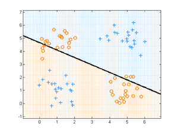 We see that the method performs at chance level, because the data is not linearly separable. A simple fix to this problem is to use basis function expansion, as we discuss here.
Controlling the optimizer
Computing the ML or MAP parameter estimate, as well as a Laplace approximation to the posterior, involves solving an optimization problem. When we use a Gaussian prior, the resulting objective is convex and smooth. We use Mark Schmidt's excellent minFunc package for such problems. (A version is included in pmtkSupport.)
minFunc.m implements many different algorithms and supports a variety of optional arguments which control the convergence threshold, max number of iterations, etc. In pmtk, you can pass in optional arguments through to minfunc as follows: [model] = logregFit(X, y, 'fitOptions', options)
Below we compare different optimizers for finding the MAP estimate for a binary logistic regression model under a weak Gaussian prior, applied to two of the MNIST digit classes. (The code extends easily to the multi-class case, but this is a bit slower). Specifically, we compare the following
- sd: steepest descent
- cg: conjugate gradient
- bb: barzilai borwein
- lbfgs: limited memory BFGS
sd, cg and bb are first order methods; lbfgs is second order.
To make the optimization problem a bit harder, we don't preprocess the data in any way. (By default, logregFit.m standardizes its inputs, as well as adding a column of 1s; standardization helps convergence a lot, as well as being advisable for statistical reasons.) (Based on logregOptDemo.m )
clear all setSeed(0); Ntrain = []; [Xtrain, ytrain, Xtest, ytest] = mnistLoad([2 3]); lambda = 1e-3; % minfunc options options = []; options.derivativeCheck = 'off'; options.display = 'none'; %options.display = 'iter'; options.maxIter = 50; options.maxFunEvals = 50; options.TolFun = 1e-3; % default 1e-5 options.TolX = 1e-3; % default 1e-5 % algorithms methods = {'sd', 'cg', 'bb', 'lbfgs'}; for m=1:length(methods) method = methods{m} options.Method = method; tic [model, X, lambdaVec, opt] = logregFit(Xtrain, ytrain, 'regtype', 'l2', ... 'lambda', lambda, 'fitOptions', options, 'preproc', []); t = toc; fvalTrace = opt.output.trace.fval; finalObj = opt.finalObj; figure; plot(fvalTrace, 'o-', 'linewidth', 2); set(gca, 'xlim', [10 50], 'ylim', [600 1500]); % make scales comparable title(sprintf('%s, %5.3f seconds, final obj = %5.3f', ... method, t, finalObj)); end
method = sd method = cg method = bb method = lbfgs
 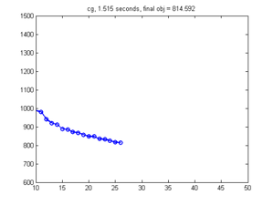 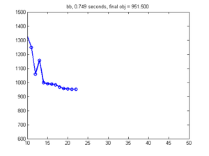 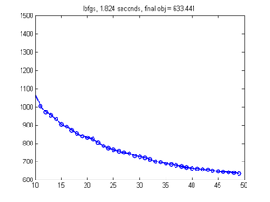
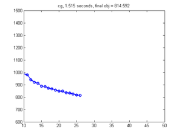 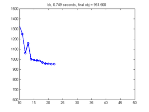 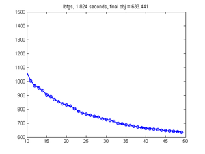 Since the objective is convex, all methods find the same solution if given enough time. If you want a very precise estimate, LBFGS is the method of choice, but if a somewhat sloppier estimate is sufficient, fast first-order methods such as BB are the way to go. See also
- A comparison of numerical optimizers for logistic regression, Tom Minka, tech report, 2003.
- output of demoMinfuncHighdim
Sparse logistic regression
To create sparse classifiers, we can perform MAP estimation using L1 regularization. Analogously to the linear regression case, we can use the following methods:
Multi-layer perceptrons (feedforward neural networks)
MLPs are a form of nonlinear model for regression/ classification. The two key operations are:
- forwards propagation: compute 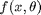 by passing 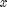 through each layer
- back propagation: compute the derivative of the loss function by passing the error signal back through each layer
pmtk uses two different implementations of these functions. One is based on Mark Schmidt's code, available here. This code currently only supports regression and binary classification, but could easily be extended. The other is based on Ian Nabney's Netlab. This supports regression, binary and multi-class classification, but only supports one hidden layer. (Combining the functionality of these two code bases is left as an exercise to the reader.)
Given a forwards and backwards propagation method, it is easy to implement the mlpFit.m and mlpPredict.m methods. For fitting, we use minfunc.m . Note that the objective function for MLPs is not convex, so we may get stuck in local optima.
Below we give a simple example of an MLP for solving a nonlinear binary classification problem. (Based on mlpClassifDemo.m )
H = [3, 6, 9]; for hi=1:length(H) nhidden = H(hi); setSeed(0); nVars = 2; nInstances = 400; options.Display = 'none'; options.MaxIter = 100; [X,y] = makeData('classificationNonlinear',nInstances,nVars); [N,D] = size(X); X1 = [ones(N,1) X]; lambda = 1e-2; model = mlpFit(X, y, 'nhidden', nhidden, 'lambda', lambda, ... 'fitOptions', options, 'method', 'schmidt'); [yhat, py] = mlpPredict(model, X); nerr = sum(yhat ~= y); str = sprintf('mlp with %d hidden units, nerr = %d', model.nHidden, nerr); plotDecisionBoundary(X, y, @(X)mlpPredict(model, X)); title(str); end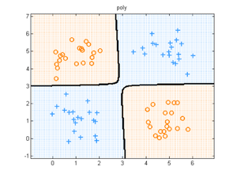 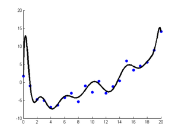

We see that the training set error rate decreases monotonically with model complexity (number of hidden units). Eventually the model will overfit. Obviously we can use fitCv.m to choose 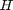 and 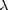. But when each layer is allowed its own regularizer, using CV to tune them all becomes too slow. This is one motivation for Bayesian methods.
Bayesian methods for neural networks
Bayesian methods for MLPs are not supported by pmtk. If you are interested in this, check out the following packages
Convolutional neural nets
Convolutional neural nets are not supported by pmtk. If you are interested in this, check out the following packages
This page was auto-generated by calling pmtkPublish(C:\kmurphy\GoogleCode\pmtk3\docs\tutorial\tutDiscrimClassif.m) on 08-Sep-2010 17:19:29